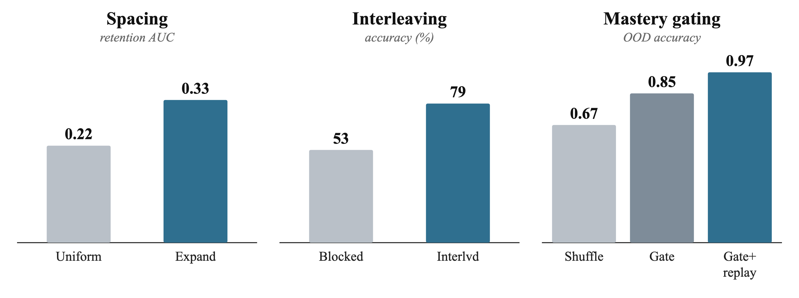

Spacing. Expanding-interval review beat uniform review on knowledge retention (AUC 0.33 vs. 0.22; 95% CI 0.01–0.19; Pythia-162M, 20 seeds); both beat no review.
Interleaving. Mixing subjects rather than teaching in blocks lifted accuracy 52.8% → 79.2% (controlled pilot; single-subject controls showed no order effect).
Mastery gating. A mastery gate + replay was strongest (multi-step OOD 0.97 vs. 0.67 for shuffle); replay prevented catastrophic forgetting and reached hard skills using fewer tokens.
Bottom line. Under matched compute, all three learning-science principles show early positive transfer to pretraining; confirmatory preregistered runs are scoped and low-cost (hundreds to ~$10k each).
